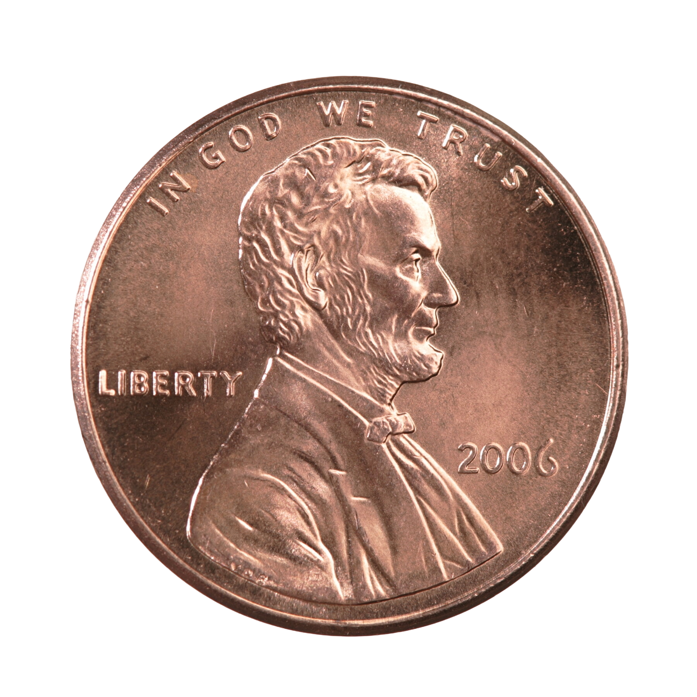

<!DOCTYPE html>
<html lang="en">
<head>
<meta charset="UTF-8">
<meta name="viewport" content="width=device-width, initial-scale=1.0">
<title>Make A Wish</title>
<link rel="stylesheet" href="style.css">
<style>
  /* Page shell: full-height body with a tiled background image behind everything */
  html, body {
    margin: 0;
    min-height: 100%;
    height: 100%;
  }

  body {
    position: relative;
    isolation: isolate; /* gives this page its own stacking context, independent of any parent page */
    background-image: url("distorted-tile.png");
    background-repeat: no-repeat;
    background-size: cover;
    background-position: center center;
    background-attachment: fixed;
  }

  /* Translucent water-texture overlay that sits above the tiled background but below "surfacing" pennies */
  body::before {
    content: "";
    position: fixed;
    inset: -12%;
    background-image: url("assets/images/water-texture.jpeg");
    background-repeat: no-repeat;
    background-position: center;
    background-size: 155%;
    opacity: 0.45;
    pointer-events: none;
    z-index: 1;
  }

  /* Default every direct child of body to sit below the water-texture overlay (z-index 1) */
  body > * {
    position: relative;
    z-index: 0;
  }
</style>
<body>
  <!-- Container that all generated pennies get absolutely positioned inside -->
  <div class="penny-field" id="penny-field"></div>

  <!-- Fixed input bar at the bottom where the user types a dream -->
  <form class="dream-form" id="dream-form">
    <input
      type="text"
      id="dream-input"
      class="dream-input"
      placeholder="What are your dreams?"
      autocomplete="off"
      maxlength="60"
    >
  </form>

  <script>
    const form = document.getElementById('dream-form');
    const input = document.getElementById('dream-input');
    const field = document.getElementById('penny-field');

    // Tracks where existing pennies were placed, so new ones can avoid overlapping them
    const placedPennies = []; // {x, y} centers, in px relative to penny-field
    // The most recently created penny stays surfaced (above the water texture, ripple playing)
    // until the next dream is submitted, at which point it "sinks" back below the water texture
    let latestItem = null;
    const PENNY_FOOTPRINT = 170; // approx visual diameter of a penny + its label, for overlap checks
    const EDGE_MARGIN = 90; // keep pennies from spawning too close to the field edges
    const FORM_CLEARANCE = 90; // keep pennies clear of the fixed dream-form at the bottom

    // Picks a random point inside the field that's at least PENNY_FOOTPRINT away from
    // every already-placed penny, trying up to 200 times before settling for the least-bad spot
    function getRandomPennyPosition() {
      const rect = field.getBoundingClientRect();
      const minX = EDGE_MARGIN;
      const maxX = Math.max(minX, rect.width - EDGE_MARGIN);
      const minY = EDGE_MARGIN;
      const maxY = Math.max(minY, rect.height - EDGE_MARGIN - FORM_CLEARANCE);

      let best = null;
      let bestMinDist = -1;

      for (let attempt = 0; attempt < 200; attempt++) {
        const x = minX + Math.random() * (maxX - minX);
        const y = minY + Math.random() * (maxY - minY);

        let minDist = Infinity;
        for (const p of placedPennies) {
          const d = Math.hypot(p.x - x, p.y - y);
          if (d < minDist) minDist = d;
        }
        if (placedPennies.length === 0 || minDist >= PENNY_FOOTPRINT) {
          return { x, y };
        }
        if (minDist > bestMinDist) {
          bestMinDist = minDist;
          best = { x, y };
        }
      }
      // couldn't find a non-overlapping spot after many tries; use the least-bad option
      return best || { x: minX, y: minY };
    }

    form.addEventListener('submit', (e) => {
      e.preventDefault();
      const text = input.value.trim();
      if (!text) return;

      // Build a new penny: ripple gif behind, coin image in front, dream text as the label
      const item = document.createElement('div');
      item.className = 'penny-item surfacing';
      item.innerHTML = `
        <div class="penny-ripple-wrap">
          
          
        </div>
        <h3 class="penny-header"></h3>
      `;
      item.querySelector('.penny-header').textContent = text;

      // Place it at a random, non-overlapping spot and remember that spot for future pennies
      const pos = getRandomPennyPosition();
      item.style.left = pos.x + 'px';
      item.style.top = pos.y + 'px';
      placedPennies.push(pos);

      // Sink the previously-latest penny (hide its ripple, drop below the water texture)
      // now that this new one is taking over as the surfaced one
      if (latestItem) {
        latestItem.classList.remove('surfacing');
        latestItem.classList.add('sunk');
      }
      latestItem = item;

      field.appendChild(item);
      input.value = '';
    });
  </script>
</body>
</html>

